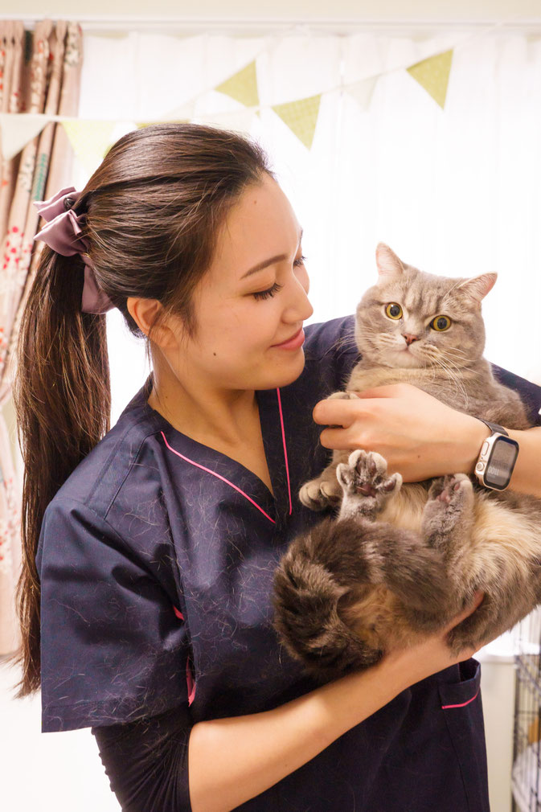

About nounou
大切なペットをお預かりするシッターをご紹介します。
動物看護師としての経験と、3児のママとしての温かさで、安心のお世話を。

さいとう まなみ
子供3人と柴犬の「つくし」、マンチカンの「こたつ」を育てるママさんシッター
大学卒業後、動物病院にて動物看護師として約5年間勤務。 日々の診療補助やペットの健康管理を通じて、動物の体調変化を見抜く目を養いました。 結婚・出産を機に現場を退くことになりましたが、動物に関わる仕事を諦めきれず、ペットシッターになることを決意しました。
現在は、さまざまなご家庭のペットさんの nounou（シッター・乳母）として活動中です。 動物看護師としての知識と、3人の子どもを育てる中で培った「小さな変化に気づく力」を活かしながら、一人ひとりのペットに寄り添ったお世話を心がけています。
趣味：晩酌 ＆ ジェルネイル令和5年7月1日 取得
令和6年1月12日 取得
令和6年2月2日 取得